v2.0)El modelo de clases de la Fase 1 se mantuvo como base, pero la evolucion hacia una aplicacion web exigo ajustes que se documentan a continuacion.
| Area | Fase 1 (propuesta) | Fase 2 (implementado) |
|---|---|---|
| Tipos de espacio | Entidades de ejemplo de otra linea: CanchaFutbol,
CanchaTenis y Piscina. |
Se ajusta al Caso A asignado: Sala (sala de reunion), Escritorio y Cancha (deporte), que son los tipos que exige la rúbrica. |
Interfaz Reservable |
Incluía hayDisponibilidad() junto a
calcularCosto(). |
La disponibilidad ya no es una pregunta al objeto: dos reservas se
traslapan o no según los datos actuales de la base, se
consulta con SQL (hora_inicio < fin AND hora_fin >
inicio). La interfaz quedó reducida a
calcularCosto(float $horas, bool $horarioPico), que es
la parte genuinamente polimórfica. |
| Namespace de servicios | App\Servicios\ArchivoReservas. |
Se alineó a los nombres en ingles del autoloading PSR-4:
App\Services\ArchivoReservas (commits de refactor). |
| Persistencia | Arreglos en main.php y archivo JSON. |
MySQL/MariaDB con PDO y consultas preparadas; el JSON de la Fase 1
se conserva solo como demostración de escritorio
(php main.php). |
| Capas nuevas | No existían. | Repositorios, fábrica, validador, servicio de imágenes,
helpers de sesión/CSRF, layout y vistas, páginas de
public/ y pruebas end-to-end. |
| Recargos y "dato calculado" | Tarifas fijas por tipo en la demo. | Recargo de horario pico (desde las 17:00): Sala 1,20 · Escritorio 1,10 · Cancha 1,25, y un dato calculado distinto por tipo (2 h, 4 h y 1 h) que hace visible el polimorfismo en listados, fichas y reporte. |
Espacio abstracta con métodos polimórficos, la
entidad Reserva compuesta por un Espacio, las
interfaces Reservable y Exportable, y la prueba de
humo de la Fase 1 (sigue funcionando con php tests/smoke.php).Se eligió la tabla única con columna tipo
(Single Table Inheritance) porque el listado, el reporte y el panel necesitan
ordenar y contar los tres tipos juntos sin hacer JOINs, y porque
la aplicación siempre recupera espacios completos: una sola consulta
SELECT * trae todo y la fábrica decide qué subclase
instanciar. La desventaja de la opción que no se eligió (tabla
base + tabla por tipo) es que exige un JOIN por cada lectura y
tres tablas que mantener en cada consulta de listado; además, al ser la
base de datos pequeña (un centro deportivo), la normalización
extra no aportaba y sí complejaba los CHECK y la
reutilización de código.
Figura 1. Diagrama entidad-relación del Caso A.
tipoespacios guarda los campos comunes de las tres subclases y
tres columnas específicas que solo se llenan cuando el tipo
corresponde (si no, quedan en NULL, reforzado con
CHECK). La lógica de decidir qué clase se construye
a partir de una fila vive únicamente en
EspacioFactory::desdeFila().
reservas se relaciona con espacios mediante
espacio_id con ON DELETE RESTRICT: no se puede
borrar un espacio que tenga reservas (el sistema lo avisa en lugar de
borrar en cascada). Además, el horario tiene un
CHECK (hora_fin > hora_inicio) y la prohibición de
traslapes se verifica en la capa de acceso a datos con una consulta que
compara intervalos.
Figura 2. Diagrama de clases de la Fase 2: dominio, fábrica, repositorios y servicios auxiliares.
| Clase (namespace) | Tabla | Columnas | Observaciones |
|---|---|---|---|
App\Espacios\Espacio (abstracta) | espacios |
id, tipo, nombre,
capacidad, tarifa_base, imagen |
Una fila por objeto; tipo guarda la subclase concreta. |
App\Espacios\Sala | espacios |
comunes + ubicacion |
ubicacion NOT NULL cuando tipo='sala' (CHECK). |
App\Espacios\Escritorio | espacios |
comunes + zona |
zona NOT NULL cuando tipo='escritorio' (CHECK). |
App\Espacios\Cancha | espacios |
comunes + deporte |
deporte NOT NULL cuando tipo='cancha' (CHECK). |
App\Entidades\Reserva | reservas |
id, espacio_id, fecha,
hora_inicio, hora_fin, cliente |
espacio_id es la FK a espacios.id; la
propiedad en memoria es un objeto Espacio (composición). |
App\factories\EspacioFactory | — | Une tipo → clase en un solo mapa |
No persiste: solo traduce fila/formulario a objeto y viceversa. |
App\Validation\Validador | — | — | Acumula errores por campo antes de tocar la base. |
App\Services\GestorImagenes | espacios.imagen |
Guarda solo el nombre aleatorio generado (p. ej.
5b37c6b5….png) en public/uploads/ |
Nunca se guarda el nombre original ni la ruta completa. |
App\Database\Conexion | — | — | Devuelve la instancia PDO (inyección de dependencias). |
| Campo | Regla en el cliente | Regla en el servidor | Mensaje mostrado |
|---|---|---|---|
| Nombre (espacio) | required y
maxlength=80; JS marca aria-invalid. |
requerido() + maximo(80) en
Validador. |
«El campo Nombre es obligatorio.» |
| Capacidad | type="number" min="1" required. |
requerido() + enteroMayorQue(0). |
«El campo Capacidad debe ser mayor que 0.» |
| Tarifa base | type="number" min="0.01" step="0.01" required. |
requerido() + decimalMayorQue(0). |
«El campo Tarifa base debe ser mayor que 0.» |
| Tipo | Selector con las tres opciones; al cambiarlo se
muestran/ocultan los campos propios y se activa required. |
unoDe() contra EspacioFactory::tipos(). |
«El campo Tipo de espacio no es valido.» |
| Ubicación / Zona / Deporte | Solo visibles para su
tipo, con required solo cuando el tipo está activo. |
camposEspecificos() según el tipo elegido. |
«El campo Ubicacion (edificio y salon) es obligatorio.» |
| Imagen | accept="image/*" y vista previa en JS. |
Error de carga PHP, tamaño ≤ 2 MB y MIME real con
finfo (JPG/PNG/WEBP). |
«Formato no permitido. Use una imagen JPG, PNG o WEBP.» / «…supera el tamano maximo permitido de 2 MB.» |
| Cliente (reserva) | required,
maxlength=80. | requerido() + maximo(80). |
«El campo Cliente es obligatorio.» |
| Fecha y horas | type="date",
type="time"; JS exige fin > inicio. |
Formato YYYY-MM-DD válido con checkdate();
hora_fin > hora_inicio (también CHECK en BD). |
«El campo Hora fin debe ser posterior al campo Hora inicio.» |
| Traslape | No aplica (depende de los datos guardados). | ReservaRepositorio::existeTraslape(): compara intervalos
del mismo espacio y fecha. |
«El espacio ya tiene una reserva que se traslapa con ese horario.» |
| Token CSRF | Campo oculto en cada formulario. | csrf_verificar() en todos los POST; sin token válido
no se procesa nada. |
«La sesion expiro o el formulario no es valido. Intentalo de nuevo.» |
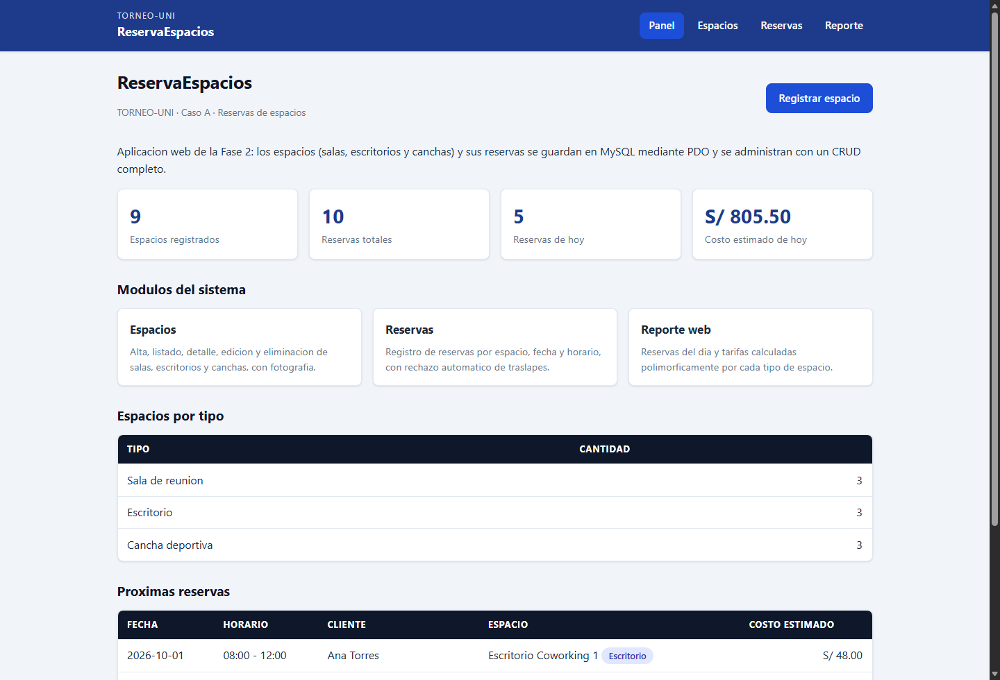
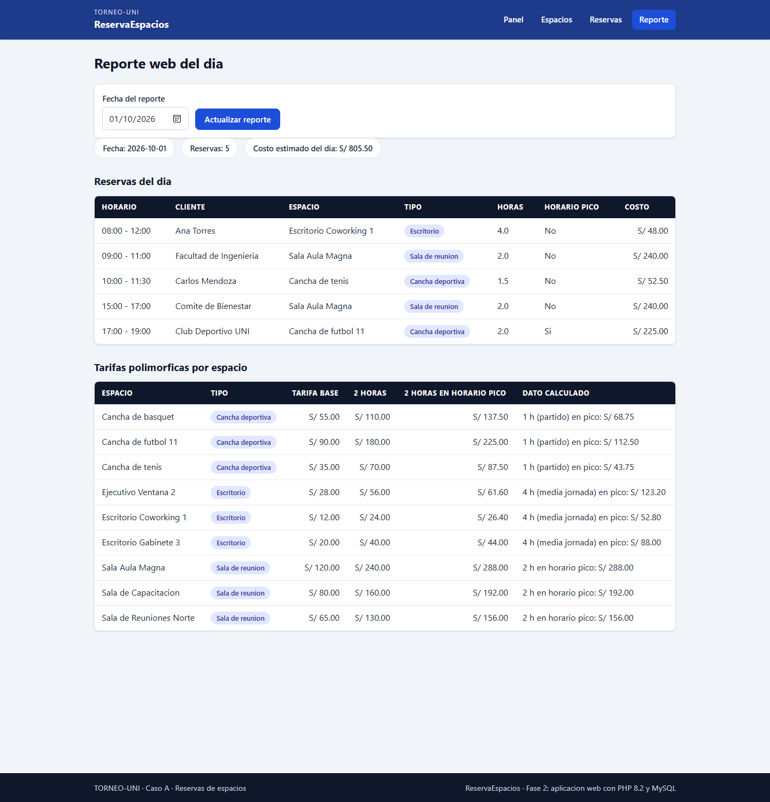
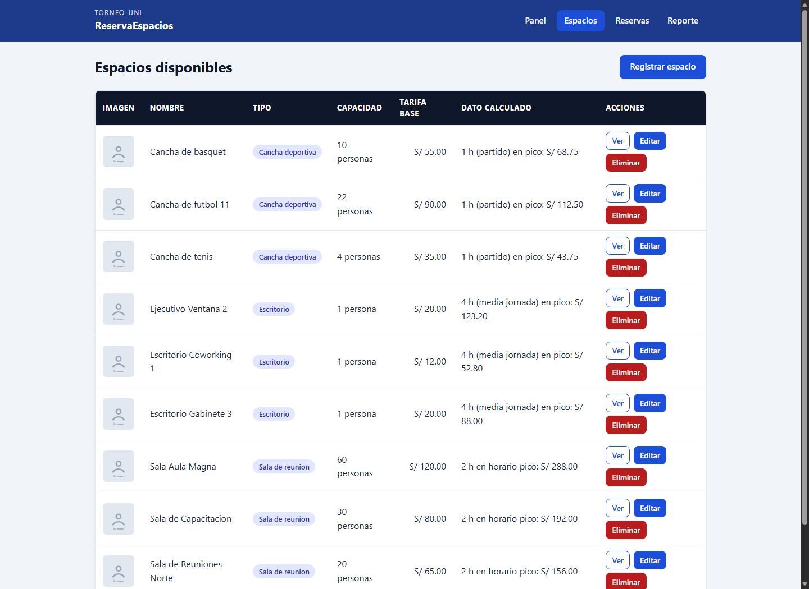
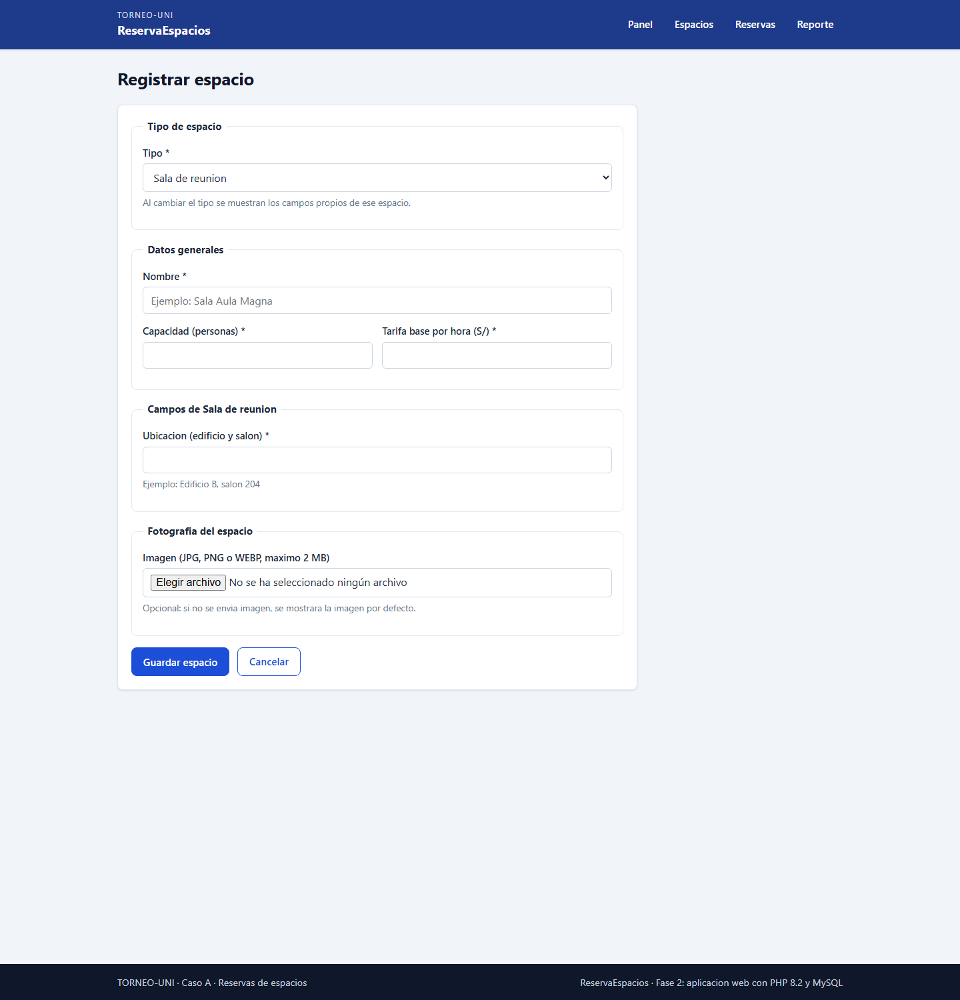
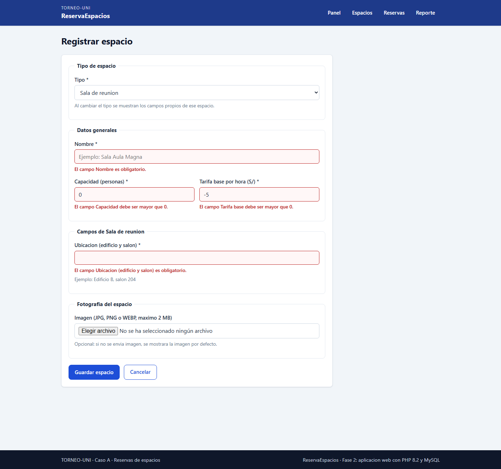
.campo-error.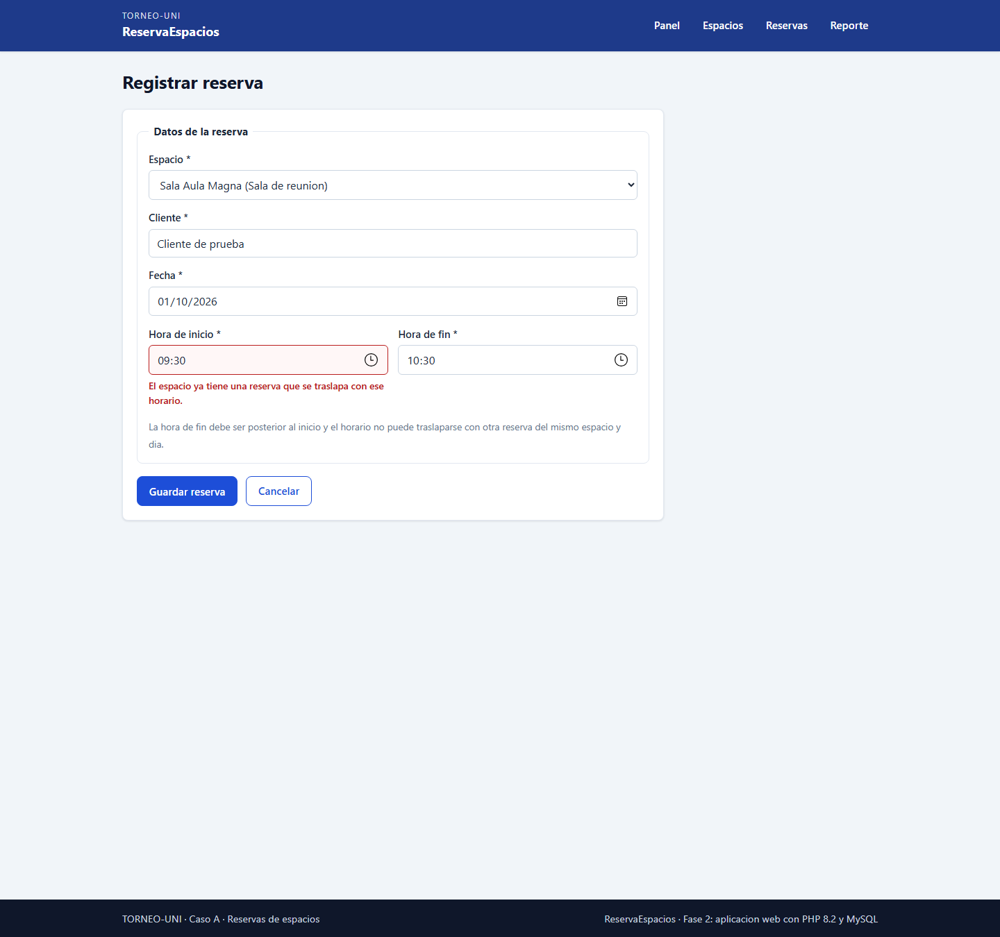
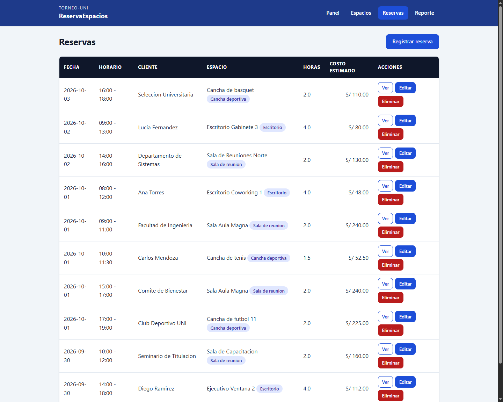
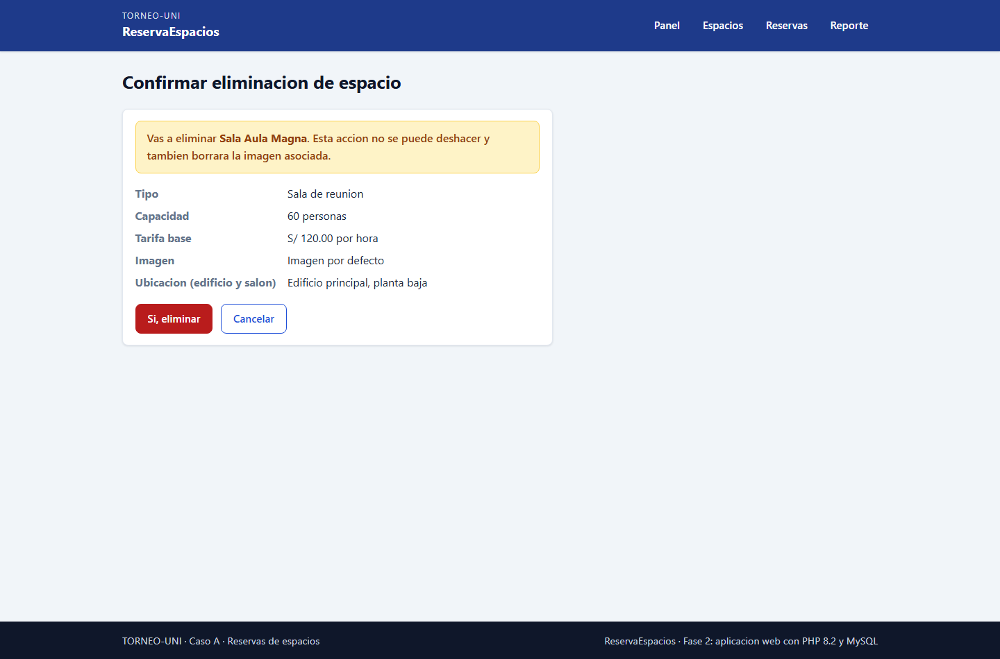
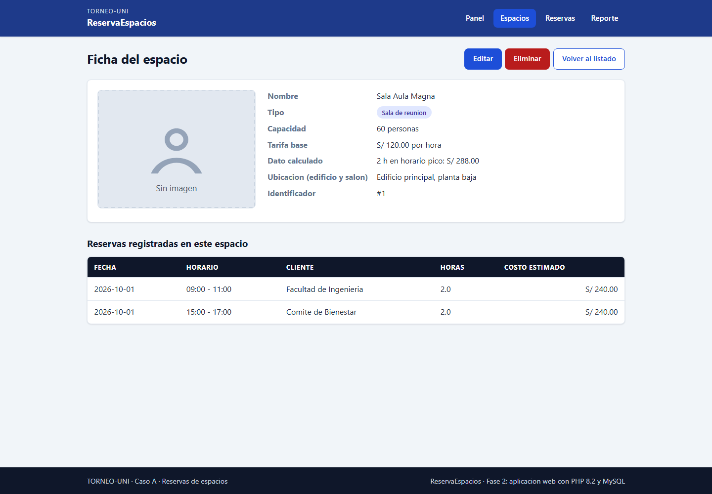
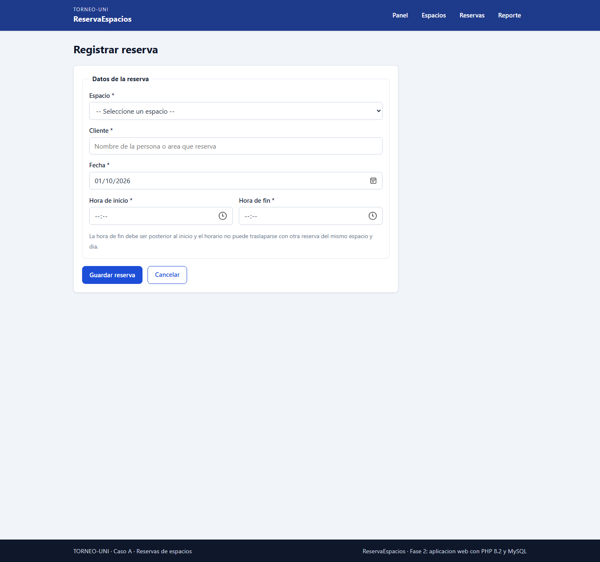
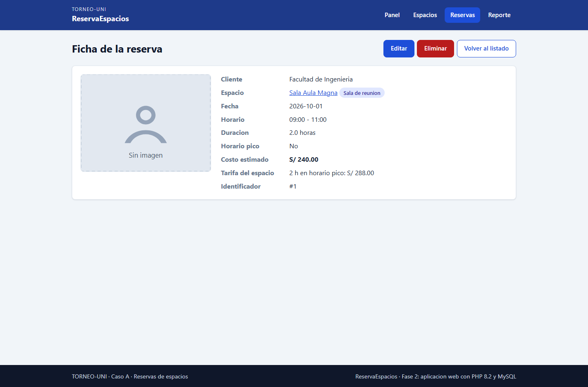
tests/e2e/web-espacios.ps1 y
tests/e2e/web-reservas-imagenes.ps1 ejecutan más de
100 comprobaciones reales contra el servidor (HTTP 200, HTML5,
CSRF válido e inválido, PRG, errores por campo, subida y
reemplazo de imagen, rechazo de MIME falso y de archivos > 2 MB,
eliminación bloqueada por reservas, traslapes, reporte por fecha
y escape de salida) y terminan con FALLOS=0.
| Pilar | Dónde se mantiene en la versión web | Evidencia en el código |
|---|---|---|
| Abstracción | Espacio sigue siendo una clase abstracta que define el
contrato de cálculo sin conocer detalles de cada tipo; las
interfaces Reservable y Exportable
delimitan capacidades. |
src/Espacios/Espacio.php (métodos abstractos
etiquetaTipo(), datoCalculado());
[ABSTRACCION] en su docblock. |
| Encapsulamiento | Propiedades private/protected con getters,
setters que validan y aFila() declarado
final: nadie altera el estado por fuera. |
src/Espacios/Espacio.php, src/Entidades/Reserva.php;
[ENCAPSULAMIENTO]. |
| Herencia | Sala, Escritorio y Cancha
extienden Espacio, añaden su atributo propio y
reutilizan el constructor con parent::__construct(). |
src/Espacios/{Sala,Escritorio,Cancha}.php;
[HERENCIA]. |
| Polimorfismo | Los listados, las fichas y el reporte llaman
calcularCosto() y datoCalculado() sin
preguntar de qué tipo es cada espacio; la única
decisión por tipo vive en la fábrica. |
views/espacios/listado.php,
views/reporte.php, public/reporte.php;
[POLIMORFISMO] y [FABRICA]. |
2 · ¿Por qué solo la fábrica conoce las
clases concretas? Porque es el único punto que debe cambiar
cuando aparece un tipo nuevo (por ejemplo, «Piscina»): basta con
crear la clase, agregar la etiqueta/tipo y una entrada en el mapa de
EspacioFactory. El resto del sistema (vistas, repositorios,
reporte) recorre EspacioFactory::tipos() y
camposEspecificos(), así que no se toca. Si la decisión
se dispersara en las vistas, habría que buscar instanceof
por todo el código.
3 · ¿Qué ataque evitan las consultas
preparadas? La inyección SQL. Entrada maliciosa:
' OR '1'='1 como nombre de cliente, o
10; DROP TABLE reservas;-- en un campo numérico. Con
prepare()/execute() el valor viaja como dato en un
protocolo separado del código SQL, así que se interpreta
literalmente: no altera el WHERE ni ejecuta sentencias extra.
Prueba: el script e2e envía <script>alert(1)</script>
como nombre y el sistema lo guarda/escapa sin ejecutarlo.
4 · ¿Por qué validar también en el
servidor? Porque el navegador es solo cortesía: cualquiera
puede desactivar JavaScript, usar un cliente distinto (curl, un bot) o
reenviar el formulario a mano. El Validador y los repositorios
son la barrera real; el e2e lo demuestra enviando POSTs sin pasar por el
formulario.
5 · ¿Por qué no confiar en la extensión
ni en el nombre original? Porque el nombre lo elige quien sube el
archivo (foto.php.jpg, caracteres de ruta, etc.). Se valida el
MIME real con finfo sobre el contenido y se guarda con un nombre
aleatorio generado por el sistema (bin2hex(random_bytes(16))),
con basename() al borrar.
6 · ¿Ventajas de los repositorios? El SQL
vive en un solo lugar (dos clases), las páginas de public/
solo piden operaciones de alto nivel, es fácil reutilizar y probar
(el e2e ejercita los mismos métodos), y cambiar la persistencia o
añadir una consulta no obliga a tocar las vistas.
El reparto acordado por el equipo y su reflejo en el historial de commits
(los aportes se confirman con git shortlog -sne):
| Integrante | Areas a cargo | Estado en el historial |
|---|---|---|
| Luis José Rodríguez Centeno (Centeno) |
Base de la Fase 1: modelo de clases de la propuesta, autoloading
PSR-4 con Composer, datos de arranque, prueba de humo
(tests/smoke.php) y documentación inicial. |
Commits del 2026-08-20 (Fase 1). |
| Victor Rafael Arévalo Sierra (Vic2910) |
Base de datos y scripts; repositorios con PDO; fábricas; validador; servicio de imágenes; CRUD completo de espacios y reservas; layout, vistas y CSS; reporte polimórfico; pruebas end-to-end; README e informe. | Commits feat/fix/test/docs de la Fase 2
(2026-10-01 en adelante). |
| Gabriela Abigail Díaz Rivera | Validación en cliente y accesibilidad: mensajes de
public/js/formulario.js, estados de error, etiquetas y
aria-* en los formularios. |
Tareas detalladas en docs/tareas-por-integrante.md
(commits pendientes de subir con su usuario). |
| Victor Manuel Mira Hernández | Contenido de las páginas y datos de prueba: textos de ayuda,
vacíos, ampliación del seed.sql y revisión
de las fichas. |
Tareas detalladas en docs/tareas-por-integrante.md
(commits pendientes de subir con su usuario). |
| Diego Marcelo Rivera López | Reporte y utilidades: exportación del reporte, filtros adicionales y revisión de las pruebas. | Tareas detalladas en docs/tareas-por-integrante.md
(commits pendientes de subir con su usuario). |
v2.0.instanceof ni
switch por tipo: agregar un cuarto tipo no toca las vistas.config/config.example.php.unlink()
puede fallar si el antivirus bloquea el archivo recién escrito;
se añadieron reintentos en GestorImagenes::eliminar().Reservable dejó de pertenecer al
objeto (disponibilidad) y qué se mantuvo (costo) exigió
reescribir el contrato y la documentación de la Fase 1.